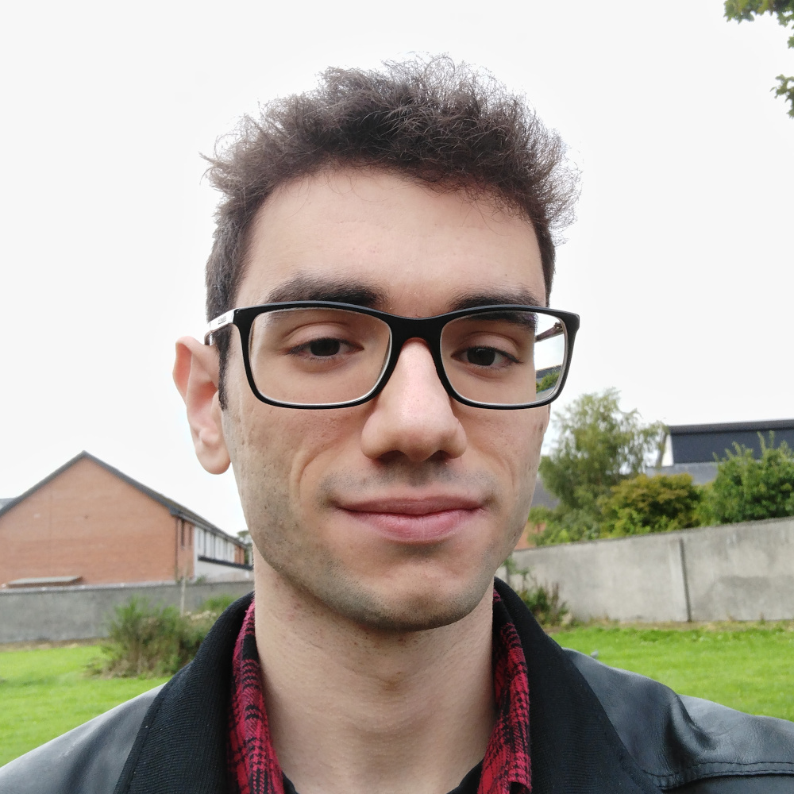

Hi! I am a PhD Student at the Institute for Adaptive and Neural Computation and part of the APRIL research lab in Edinburgh, supervised by Dr. Antonio Vergari and Dr. Iain Murray. My research interests include (tractable) generative models, neurosymbolic AI, and anything that can be found at their intersection.
Contact:Curriculum Vitae
Featured publications
For a complete list refer to the Semantic Scholar profile.
L. Loconte, A. M. Sladek, S. Mengel, M. Trapp, A. Solin, N. Gillis, A. Vergari.
ICLR 2024. Spotlight (top 5%).

L. Loconte, N. Di Mauro, R. Peharz, A. Vergari.
NeurIPS 2023. Oral (top 0.6%).